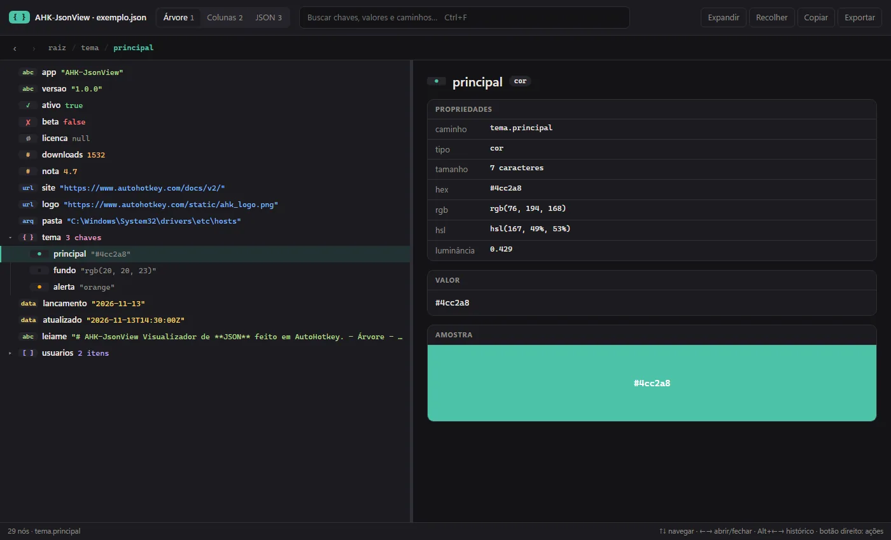
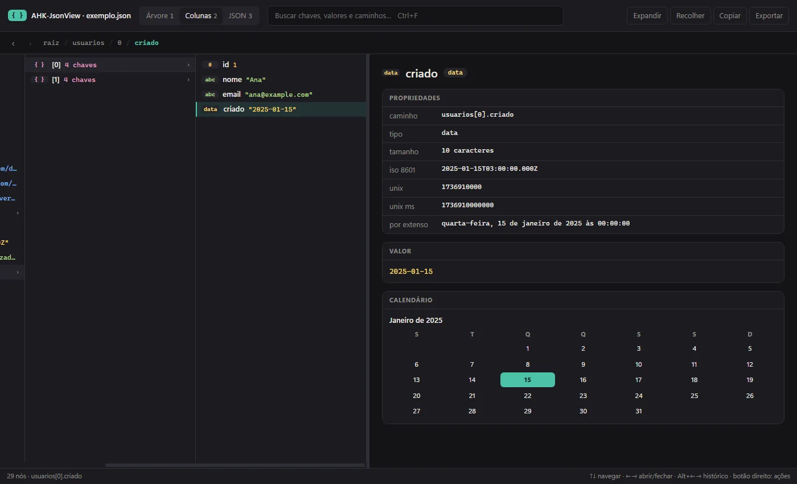
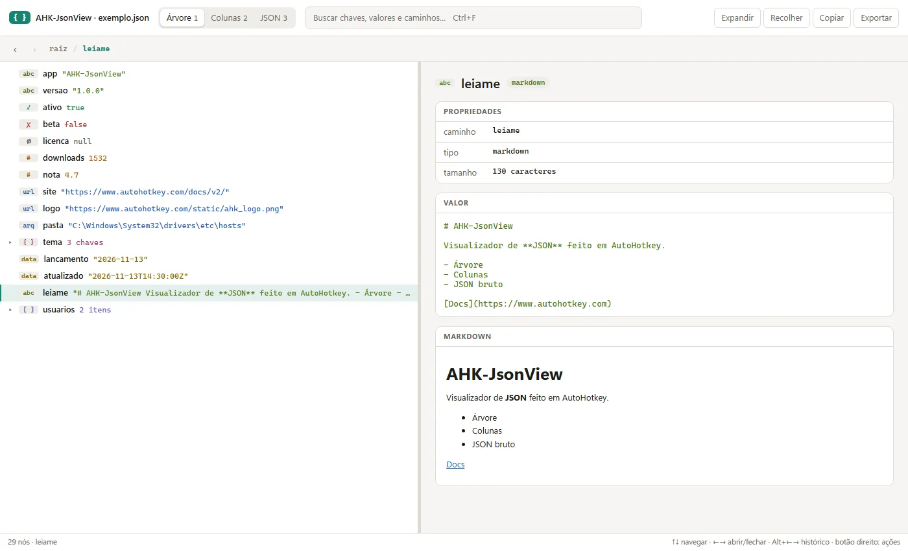

AHK-JsonView
Visualizador de JSON para AutoHotkey v2: navegue em qualquer JSON como árvore, em colunas ou como texto, com um inspetor que entende URLs, arquivos, cores, datas e Markdown.A JSON viewer for AutoHotkey v2: browse any JSON as a tree, as columns or as raw text, with an inspector that understands URLs, files, colors, dates and Markdown.
 0
0

O que fazWhat it does
- Três visões: Árvore com guias de profundidade, Colunas (colunas de Miller) e o JSON bruto com destaque de sintaxe. Troque com
1,2,3. - Three views: Tree with depth guides, Columns (Miller columns) and the raw JSON with syntax highlighting. Switch with
1,2,3. - Inspetor do nó selecionado: caminho, tipo, tamanho e um valor que você copia com um clique.
- Inspector for the selected node: path, type, size and a value you copy with a click.
- URLs e arquivos: abre links no navegador e mostra imagens; para caminhos de arquivo diz se existe, tamanho e data, e mostra o conteúdo: imagem, áudio com player, código com cores e Markdown.
- URLs and files: opens links in the browser and shows images; for file paths it tells whether the file exists, its size and date, and shows the content: image, audio with a player, highlighted code and Markdown.
- Cores e datas: amostra com hex, rgb, hsl e luminância; datas ISO 8601 ou Unix por extenso, com o calendário do mês.
- Colors and dates: a swatch with hex, rgb, hsl and luminance; ISO 8601 or Unix dates written out, with the month's calendar.
- Busca por chaves, valores e caminhos, com várias palavras e trechos destacados.
- Search across keys, values and paths, multi-word, with highlighted matches.
- Devolve um valor: com
submit_on_enter, apertarEnterfecha o visualizador e entrega o nó selecionado ao seu script. - Returns a value: with
submit_on_enter, pressingEntercloses the viewer and gives the selected node back to your script. - Temas claro e escuro seguindo o Windows, histórico de voltar e avançar e menu do botão direito para copiar e exportar.
- Light and dark themes following Windows, back and forward history and a right-click menu to copy and export.
Como funcionaHow it works
Tudo fica num arquivo só: a página (HTML, CSS e JS) mora dentro do AHK-JsonView.ahk como template. O AHK valida a entrada com o cJson, preenche título, opções e dados e abre a página num WebView2. A página fala com o AHK pelos host objects do WebView2 para copiar, abrir links e arquivos, ler prévias e salvar.Everything lives in one file: the page (HTML, CSS and JS) sits inside AHK-JsonView.ahk as a template. AHK validates the input with cJson, fills in the title, options and data and opens the page in WebView2. The page talks to AHK through WebView2 host objects to copy, open links and files, read previews and save.
http(s) são abertos. Sem internet tudo funciona, só o Markdown aparece como texto e o código fica sem cores.Your data stays on your machine. The JSON is embedded in the page and treated as untrusted: Markdown goes through DOMPurify and only http(s) links are opened. Without internet everything works, only Markdown shows as plain text and code has no colors.Como usarUse it
; AutoHotkey v2 + WebView2 (Windows 10/11) #Include AHK-JsonView\AHK-JsonView.ahk json_viewer('C:\data\config.json') r := json_viewer(data, {submit_on_enter: true}) MsgBox(r.selected) ; Enter
ImagensImages

